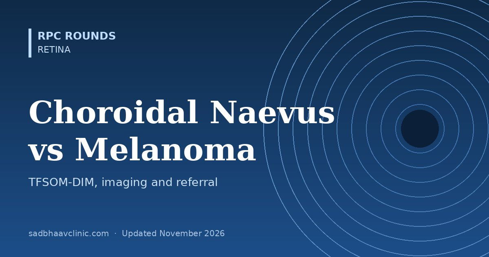

Last updated: November 2026
A flat, grey-brown spot under the retina is one of the commonest incidental findings in a dilated fundus examination. Almost all are benign naevi. The skill is to recognise the few that are small melanomas, or naevi likely to become one, and refer them early, because survival in uveal melanoma depends on tumour size at treatment. A short mnemonic and four simple scans do most of the work.
Shields and colleagues (2019) updated the older "TFSOM-UHHD" mnemonic using multimodal imaging in over 2,000 naevi. Each factor is linked to the scan that shows it best.
| Letter | Risk factor | Best shown by |
|---|---|---|
| T | Thickness over 2 mm | Ultrasound (B-scan) |
| F | Fluid: subretinal fluid | OCT |
| S | Symptoms: vision loss (to about 6/15 or worse) or photopsia | Visual acuity, history |
| O | Orange pigment (lipofuscin) | Fundus autofluorescence: bright hyperautofluorescent spots |
| M | Melanoma hollow: low internal reflectivity | Ultrasound (A- or B-scan) |
| DIM | DIaMeter over 5 mm | Fundus photography |
Five-year risk of growth into melanoma by the number of factors: none, about 1%; one, about 11%; two, about 22%; three or more, about 34% (three) rising to about 50% (four or five).
The older mnemonic, still in many textbooks, is TFSOM-UHHD: To Find Small Ocular Melanoma Using Helpful Hints Daily, which adds Margin within 3 mm of the disc, Ultrasound hollowness, Halo absent and Drusen absent. Reassuring signs are the opposite: drusen, a halo, and a flat, thin lesion with no fluid.
| Test | Naevus | Suspicious for melanoma |
|---|---|---|
| Wide-field colour photograph | Baseline for comparison: the single most useful test | Documented growth on serial photos |
| Fundus autofluorescence | Mostly iso- or hypoautofluorescent; drusen may be bright | Bright clumps (orange pigment); overlying fluid tracks show bright gravitational patterns |
| OCT (enhanced depth imaging) | Thin, smooth dome; overlying drusen; RPE changes | Subretinal fluid, "shaggy" photoreceptors, thickness increasing over time |
| B-scan and A-scan ultrasound | Flat or thin, high internal reflectivity | Thickness over 2 mm, low to medium internal reflectivity (acoustic hollowness), choroidal excavation; a collar-stud (mushroom) shape means the tumour has broken through Bruch membrane and is diagnostic of melanoma |
| FFA and ICGA | Usually not needed | Intrinsic tumour circulation ("double circulation") on FFA in larger tumours; helps rule out haemangioma |
| Lesion | Clues |
|---|---|
| Congenital hypertrophy of the RPE (CHRPE) | Flat, jet-black, sharply defined, often with depigmented lacunae and a pale halo; does not thicken. Multiple bilateral "bear-track" or pisciform lesions: think familial adenomatous polyposis (Gardner syndrome) |
| Melanocytoma of the optic disc | Very dark black lesion on or next to the disc, with feathery edges into the nerve fibre layer; usually stable |
| Circumscribed choroidal haemangioma | Orange-red dome near the disc or macula; high internal reflectivity on ultrasound; early bright filling and late "wash-out" on ICGA |
| Choroidal metastasis | Creamy-yellow, often multiple or bilateral, with a lot of subretinal fluid; ask about breast and lung cancer |
| Peripheral exudative haemorrhagic chorioretinopathy | Elderly patient, peripheral dark haemorrhagic mass, often bilateral; resolves over months |
| Eccentric disciform scar or haemorrhage (CNV or PCV) | Dark subretinal or sub-RPE blood with drusen or other AMD signs; changes over weeks |
| Choroidal osteoma | Orange-yellow plaque in a young woman; very bright on ultrasound with shadowing (calcium) |
| Posterior scleritis (nodular) | Pain, T-sign on B-scan |
| Group | Thickness (apex height) | Largest basal diameter |
|---|---|---|
| Small | 1.0–2.5 mm | 5–16 mm |
| Medium | 2.5–10 mm | 16 mm or less |
| Large | Over 10 mm | Or over 16 mm (or over 8 mm thick near the disc) |
Staging today uses the AJCC/TNM system (T1–T4 by thickness and diameter, plus ciliary body involvement and extraocular extension). See our COMS findings page.
| Situation | Plan |
|---|---|
| Flat typical naevus, no risk factors, drusen present | Baseline photograph (and ideally OCT); review at 6 months, then yearly |
| One or two risk factors | Photograph, OCT, autofluorescence and ultrasound; review every 3–4 months at first |
| Three or more risk factors, or documented growth | Refer to an ocular oncologist: this is likely a small melanoma |
| Collar-stud shape, thickness over 3 mm, or extrascleral spread | Urgent ocular oncology referral |
Always record the size in disc diameters or millimetres, the distance to the disc and fovea, and take photographs with the same camera each time; growth is the single strongest sign. Tell the patient why they are being followed so they keep the appointments.
Where residents slip
Related: Ocular Tumours: Eyelid, Conjunctiva, Uvea and Orbit, COMS Trial Findings for Choroidal Melanoma, B-scan Ultrasound Patterns: RD, PVD, Choroidal Detachment and Masses, FFA and ICG Angiography Patterns: Quick Reference Card, OCT Macula Reference Card: Normal Thickness, DME and Hole Staging.
📘 Want more exam-ready material? See Most Commons in Ophthalmology on Kindle, or browse all my books.
Looking for an eye specialist in Ahmedabad? Retina treatment at Sadbhaav or book a consultation with Dr. Dhaval Patel.